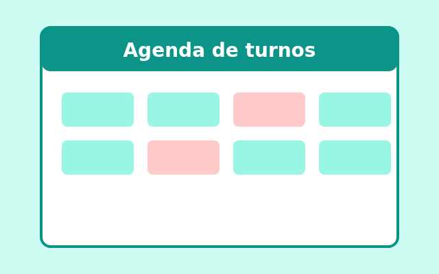
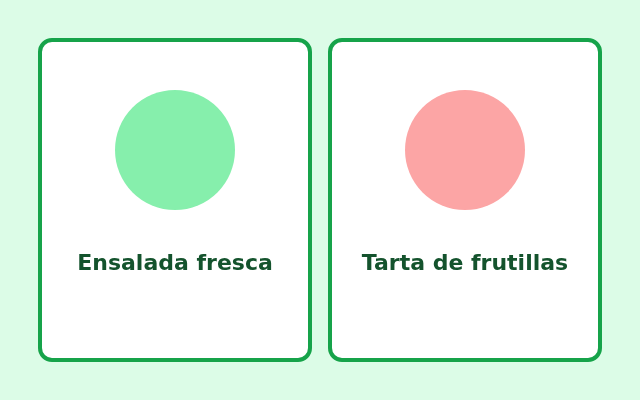

Sitio de una panadería

Una página para mostrar el pan del día y los horarios del local.
Estos son tres proyectos que armé mientras aprendía:
Una página para mostrar el pan del día y los horarios del local.

Un calendario sencillo para reservar turnos en un consultorio.

Un blog con recetas fáciles, cada una en su propia tarjeta.
Para saber cómo trabajo, leé mi lema en «Sobre mí». Si querés ver más recursos, visitá MDN en español.